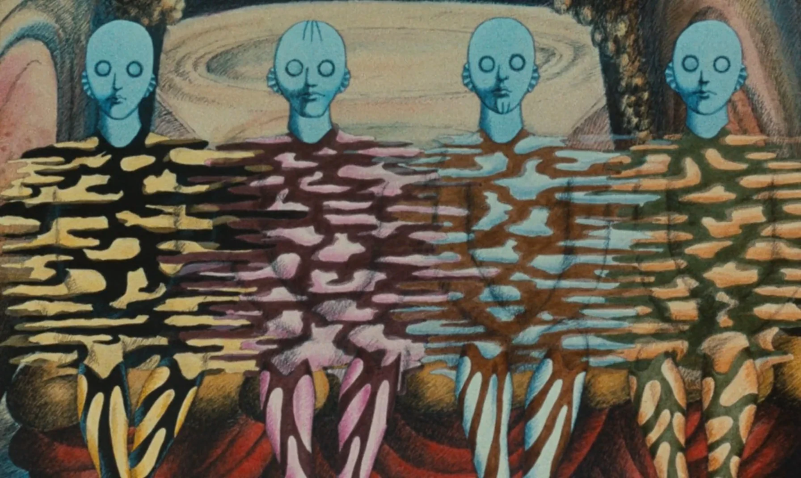
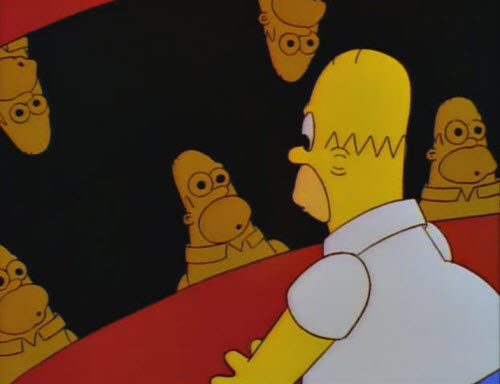
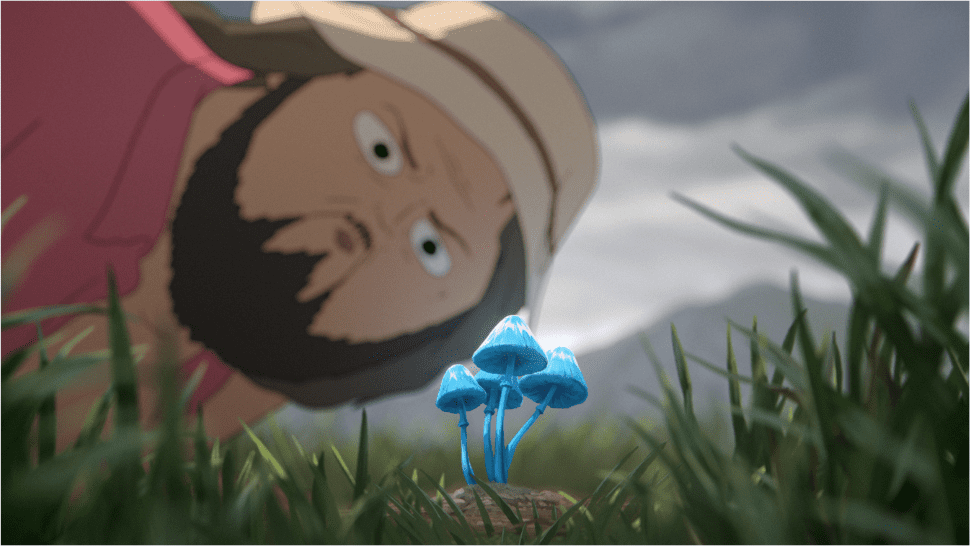
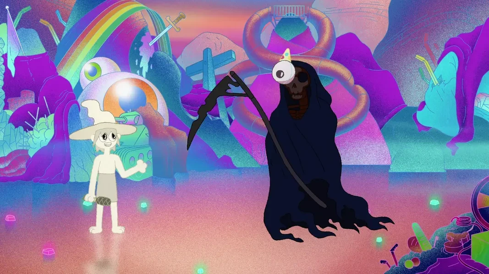

Tell us what happened.In a voice that isn't yours.
We're collecting what people actually went through with plant medicine. Ridiculous, tender, frightening, still unresolved. All of it counts, and it does not have to arrive as a tidy story. Record yours, we'll change how you sound, and you listen back before anything sends.
- The thing you said out loud that you cannot take back
- Something you understood for the first time
- A moment you have never managed to describe properly
- What you were actually afraid of
What happens to it
Open Line is run by the Machine Cinema community. Your recording becomes a short film, built at a GenJam: a room full of people animating to a voice they have never heard before, in a few hours, together. Your masked voice is the only version anyone works from. The original audio is never uploaded and we never learn who you are.
Every submission gets a reference code. Keep it and you can have your story pulled at any point, no questions and no explanation needed.
What we're chasing
Four things do the trick we're after: somebody talks plainly about something enormous while the picture goes somewhere the words cannot follow. These are the plates we're printing from.

Fantastic Planet
Flat, patient, matte. Nothing glows. The strangeness is in the drawing, not the lighting.

The chili episode
Comedy is the doorway, not the destination. It gets to loneliness by way of a laugh.

Common Side Effects
Muted, overcast, faintly unwell. Proof this register does not have to be pretty to land.

The Midnight Gospel
The picture never illustrates the audio. It runs alongside it and trusts you to hold both.
Leave out names, venues and anything that identifies anyone else.
Listen to the line so far →Find somewhere quiet. Up to 90 seconds is plenty.
Got it.
Your story is with us and your name isn't attached to it.
Write this down. It is the only way to ask for your story back, and it is the only thing connecting you to it.
A Machine Cinema project. Masking runs in your browser.
No account, no cookie, no caller ID. We're after the story, not the substance.